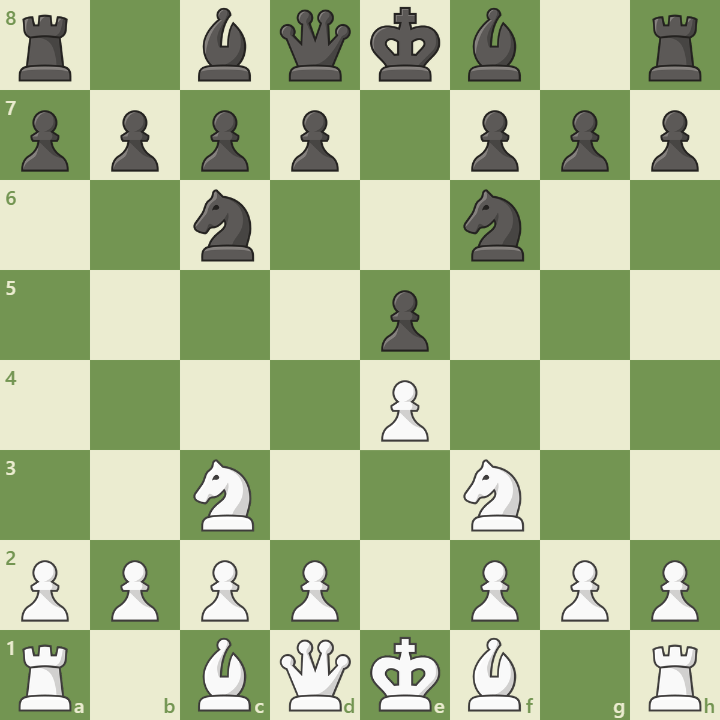

Overview
The Four Knights Game is a classical and symmetrical opening that begins with:
1. e4 e5 2. Nf3 Nc6 3. Nc3 Nf6
It leads to balanced positions with all four knights developed early. The opening is known for its simplicity, solid structure, and potential for sharp tactics if either side deviates.
Opening Diagram
This position arises after 1.e4 e5 2.Nf3 Nc6 3.Nc3 Nf6. Both sides have developed their knights, preparing for central tension and kingside castling.
Main Variations
- Spanish Variation: 4.Bb5 – leads to Ruy Lopez-style positions.
- Scotch Four Knights: 4.d4 – opens the center for tactical play.
- Italian Four Knights: 4.Bc4 – classical development with kingside pressure.
Strategic Themes
The Four Knights Game emphasizes:
- Symmetrical development and central control
- Early piece activity and safe king placement
- Transition into Ruy Lopez or Scotch-style middlegames
- Ideal for beginners and intermediate players